本文章將介紹如何使用 wowza engine 串流輸出到 wowza cloud CDN
1. 首先登入 wowza cloud 來到 Advanced 頁面
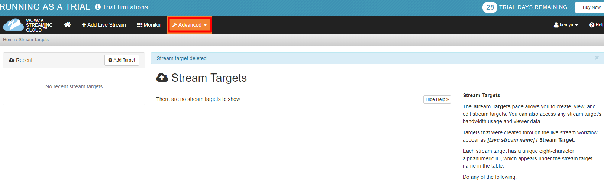
2. 再次點擊 Advanced 選擇 Stream Targets
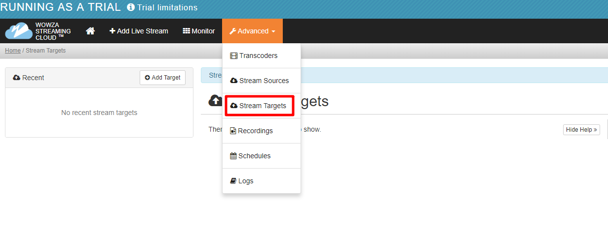
3. 點擊 Add Target 選擇 Wowza CDN - HLS 新增 CDN
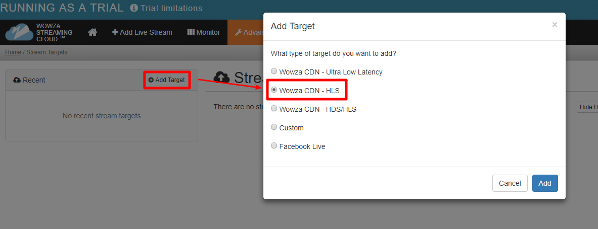
4. 設定名稱其他選項預設，點選 Add 加入
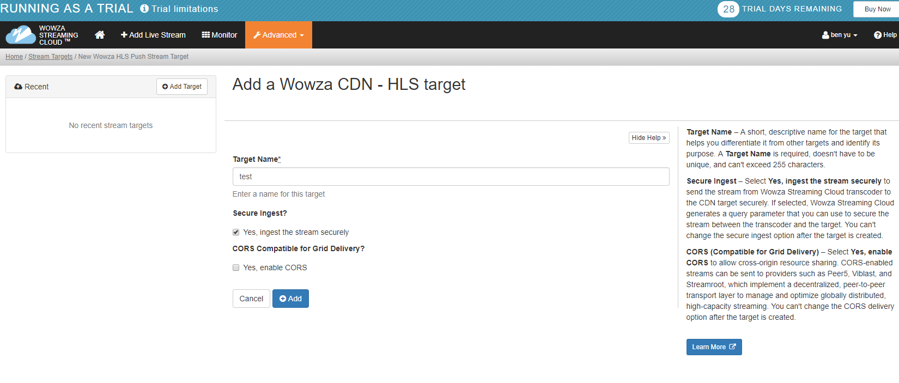
5. 下圖是設定好畫面紅框為連接代碼，帶有1的代碼用於將目標連接到 Wowza Streaming Engine
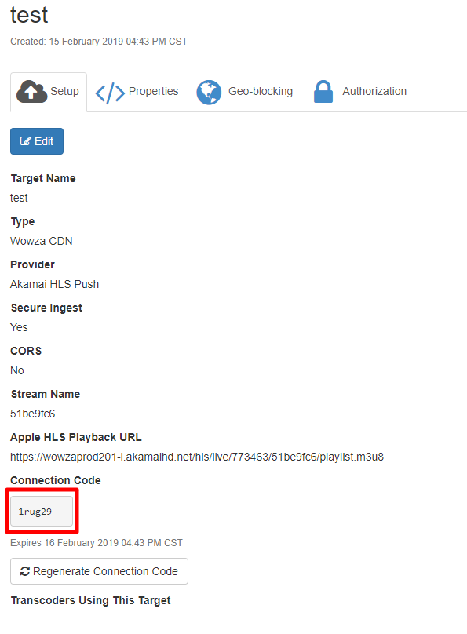
6. 接下來到 wowza streaming engine → Transcoder → 點擊 Enable Transcoder 開啟轉碼
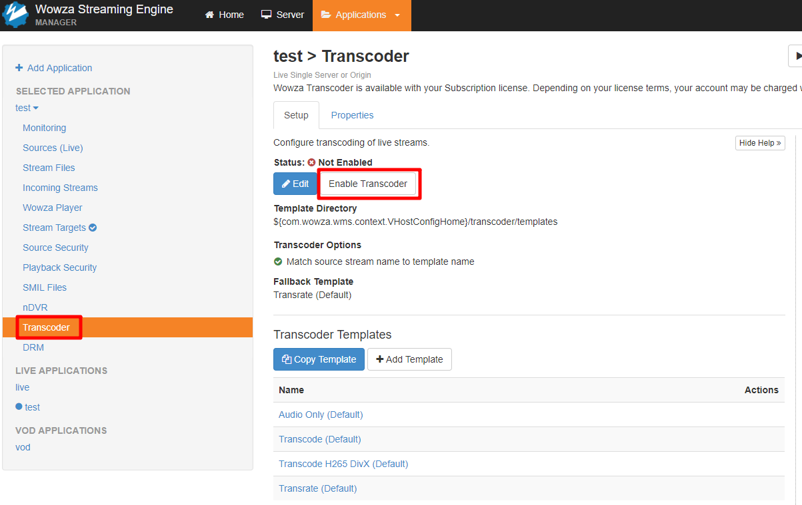
7. 開啟後點選 Restart Now 重新整理
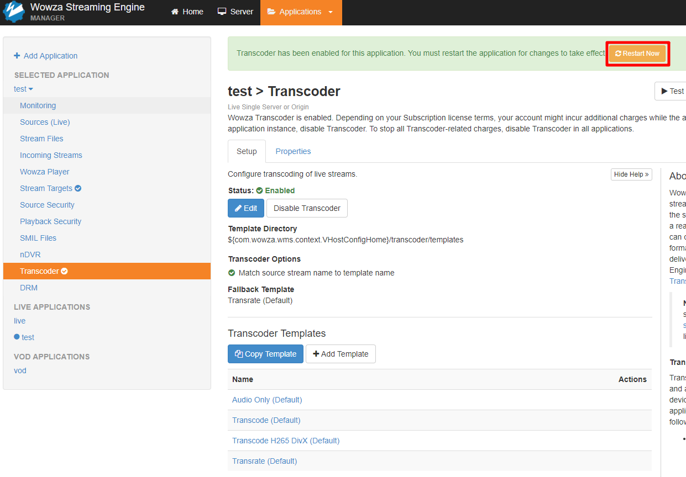
8. 重新整理完後，記得要回到 Stream Files 重新串流
wowza 串流文章傳送們
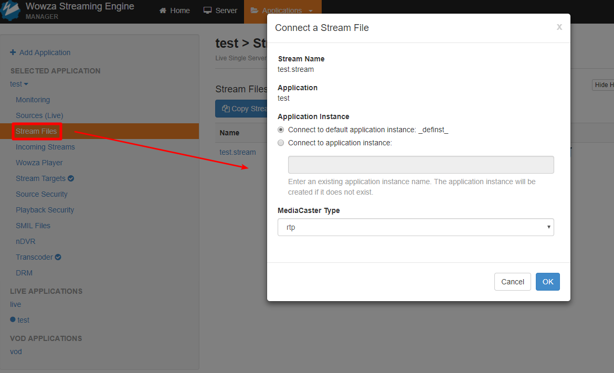
9. 看到下圖畫面就是設定成功了 ( 目前是使用預設值，轉碼設定會再做一篇文章 )
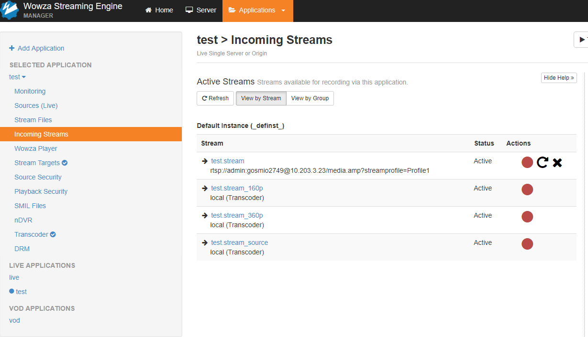
10. 再來到 wowza streaming engine → Stream Targets → Add Stream Targers 新增輸出
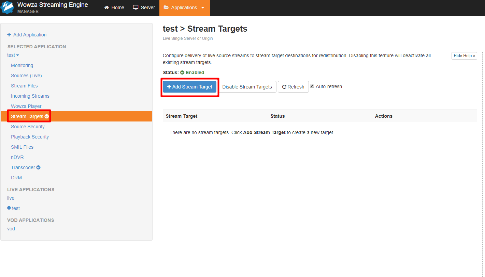
11. 選擇 wowza streaming cloud 把串流輸出到剛剛 wowza 雲端建好的 cdn
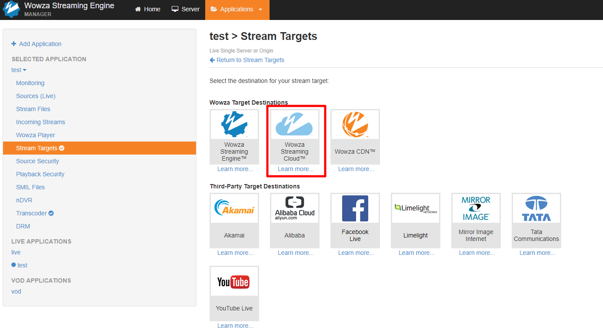
12. 輸入名稱 Stream Target Name，輸入連線代碼 Connection Code ( 連線代碼為在 wowza cloud 建立好 cdn 給的代碼 )
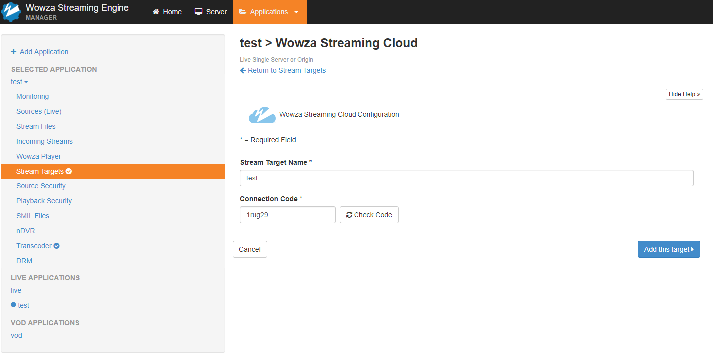
12. 輸入好代碼後點擊 Check Code 輸入建好的串流名稱，點選 Add this target
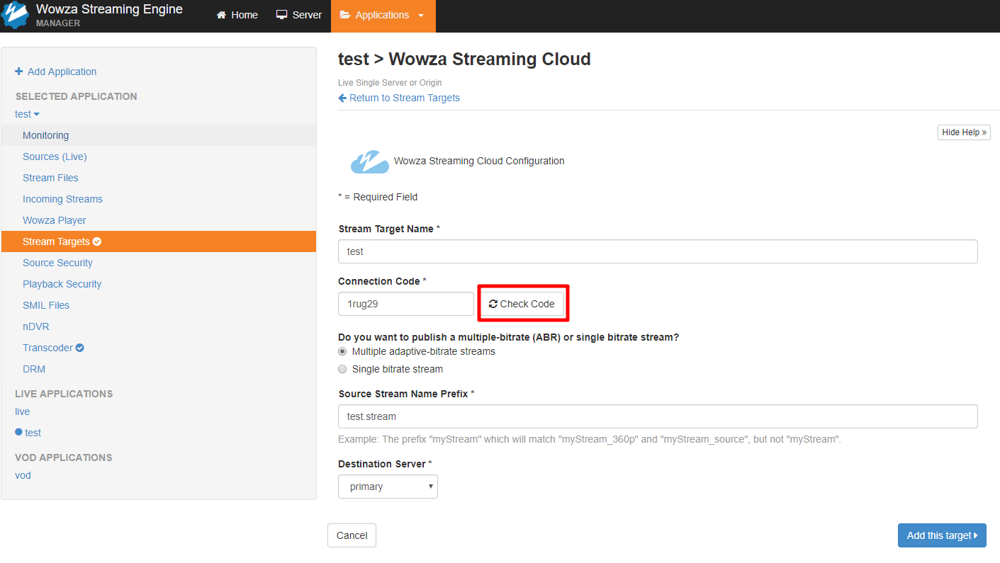
13. 看到下圖畫面就是成功轉碼並輸出到 wowza cloud cdn 了
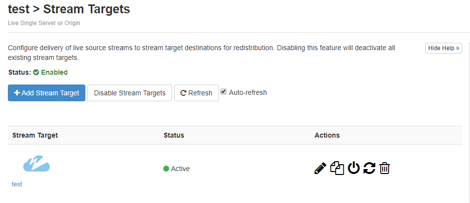
14. 接下來回到 wowza cloud 複製 Apple HLS Playback URL
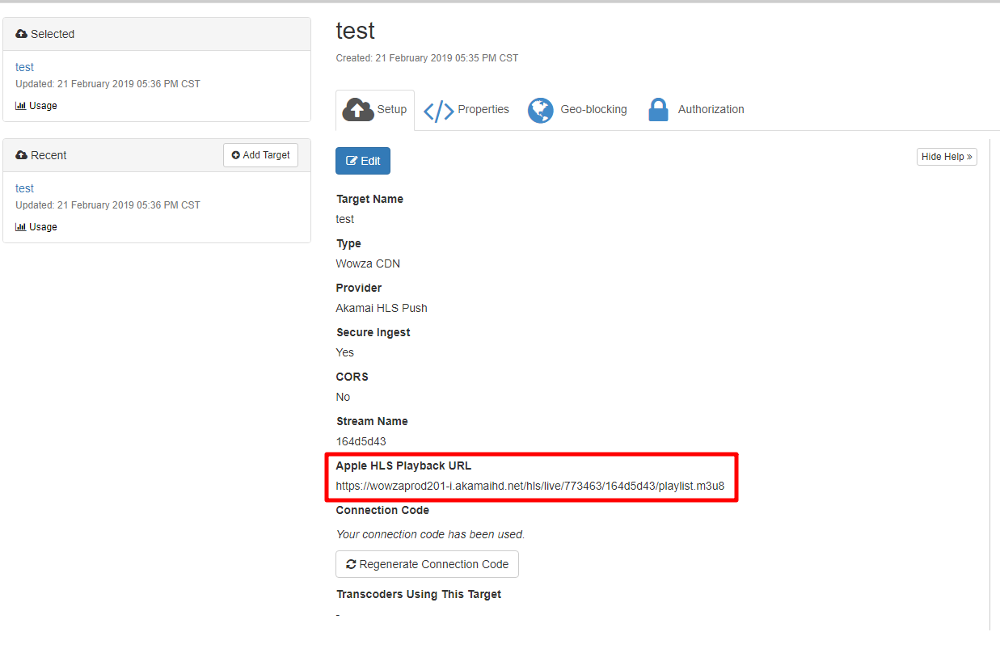
15. 開啟撥放器網路串流，把剛剛複製的 Apple HLS Playback URL 貼上，然後撥放
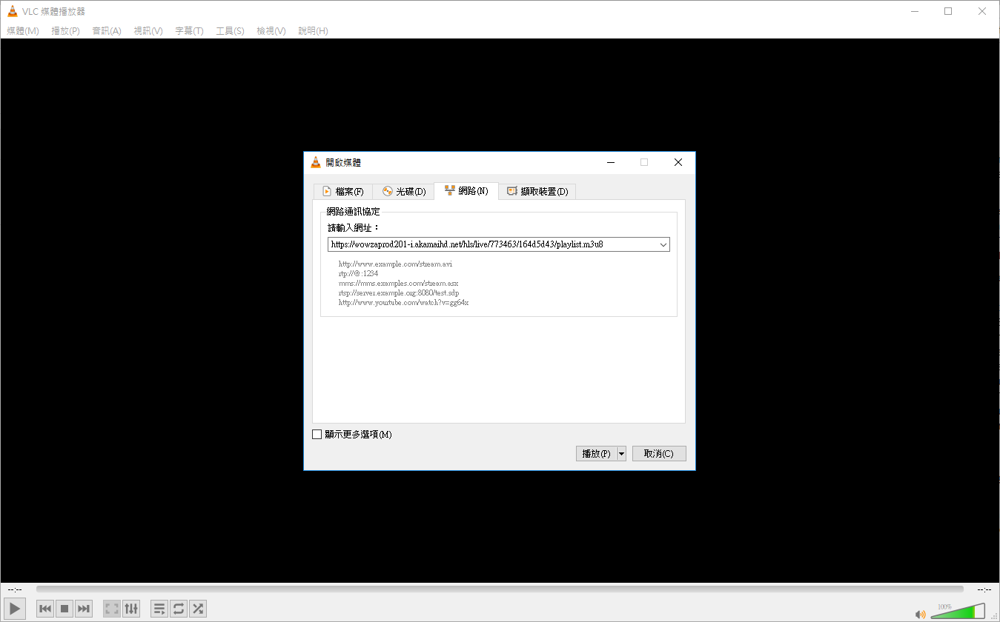
16. 如下圖出現畫面就是成功了